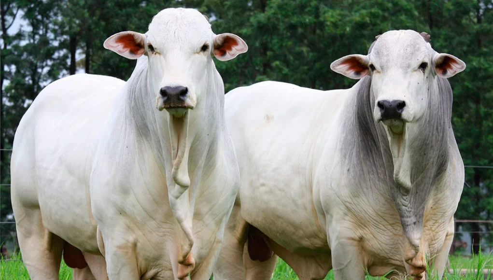
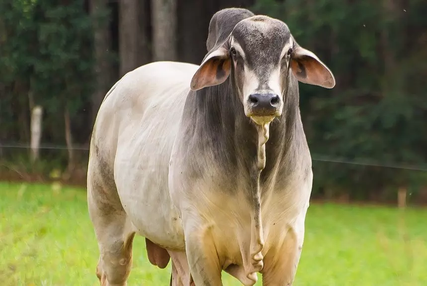
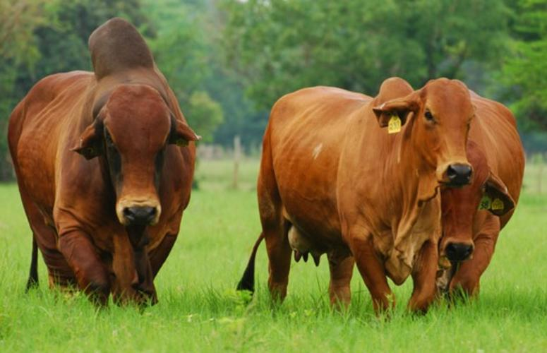

1.Defina a raça que mais atenda às suas expectativas e que esteja adequada à região da propriedade;
2.Invista em melhoramento genético do rebanho.
3.Entenda sobre as fases de criação do bovino – cria, recria, engorda;
4.Cuidado com o manejo nutricional;
5.Cuide para que as instalações sejam adequadas;
6.Faça um planejamento da gestão administrativa;
7.Torne a sua fazenda lucrativa;
AS PRINCIPAIS RAÇAS DE GADO DE CORTE
Confira a seguir as principais raças de gado de corte criadas no país!
NELORE
O gado nelore é a raça zebuína com maior produção em território nacional, afinal, são animais muito adaptados às condições climáticas do país. Também foi uma das raças que mais recebeu dinheiro para melhoramento genético para que se chegasse a um padrão de exigência nutricional eficiente.

TABAPUÃ
Os animais da raça tabapuã são reconhecidos por sua boa habilidade materna e alta fertilidade, o que faz com que sejam desejáveis para biotécnicas reprodutivas. É a única raça de zebuínos desenvolvida no Brasil e sua criação tem sido cada vez mais comum no país.

BRAHMAN
Raça zebuína que possui uma excelente conversão alimentar, ou seja, quantidade de quilos de carne produzida por quilos de alimento consumido. Além disso, as fêmeas da raça brahman tem um curto intervalo de parto em relação às demais e têm boa produção de leite. Isso resulta em bezerros desmamados com boa taxa de engorda.

Guzerá
O diferencial dessa raça é a dupla aptidão pois os animais são bons tanto para corte como leite. As fêmeas têm facilidade no parto pois os bezerros nascem menores . Outra característica é que os bovinos da raça são usadas como base genética para outros cruzamentos.
MANEJO DO GADO
1-Cria. Esta fase vai desde o melhoramento genético, crescimento do bezerro até a desmama, que acontece entre 6 a 8 meses de idade.
2-Recria e Desenvolvimento. O principal objetivo desta fase é o desenvolvimento do animal para que ele possa expressar ao máximo o seu potencial genético. Isto é, se desenvolver com a estrutura e ganho de peso da raça, no menor tempo possível.
3-Engorda e Terminação. A engorda, ou terminação como é conhecida, é a fase final da criação de gado de corte. Nesta etapa os bovinos são submetidos à uma alimentação específica para ganho de peso, para que produzam mais carne e de melhor qualidade.
VENDA DE BOVINOS
.Venda do boi gordo
.Peso da carcaça
.A forma mais comum de negociação é pelo peso da carcaça. Ou seja, as carcaças são limpas e pesadas ao final da linha de abate, e o peso é convertido em arrobas (unidade de 15 kg). Dessa forma, temos a quantidade de arrobas, que vai gerar o valor pago pelo bovino.
.Peso vivo
.Uma outra forma de negociação, em geral menos comum, é a venda no peso vivo, com preço e rendimento sobre o peso vivo, acordados entre pecuarista e frigorífico. Assim, esses bovinos são pesados na fazenda, em condições combinadas (horário e período de jejum, por exemplo) e sobre o peso vivo é calculado o peso de carcaça.